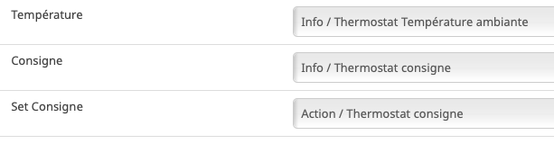
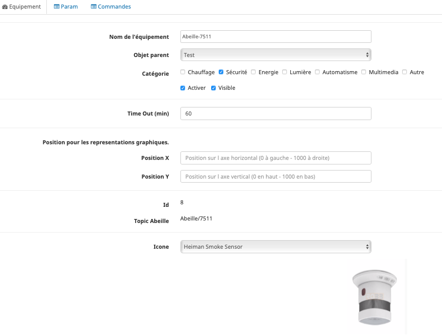
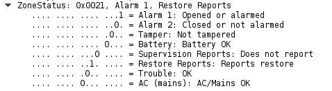
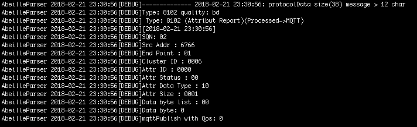
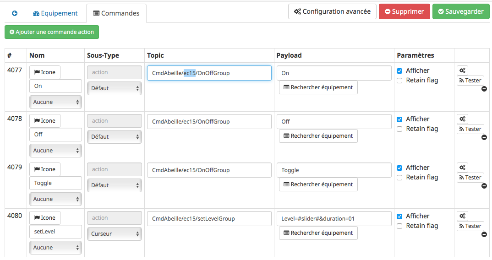
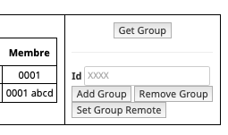
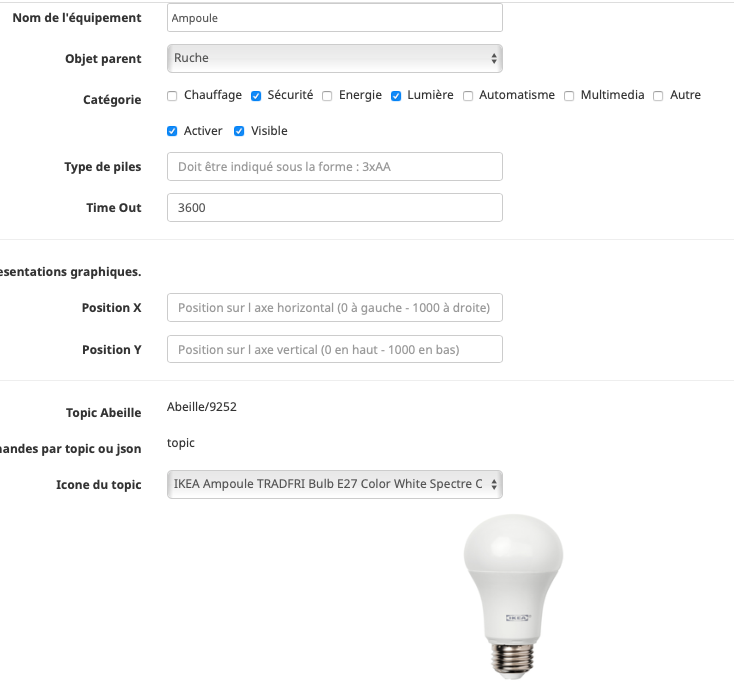
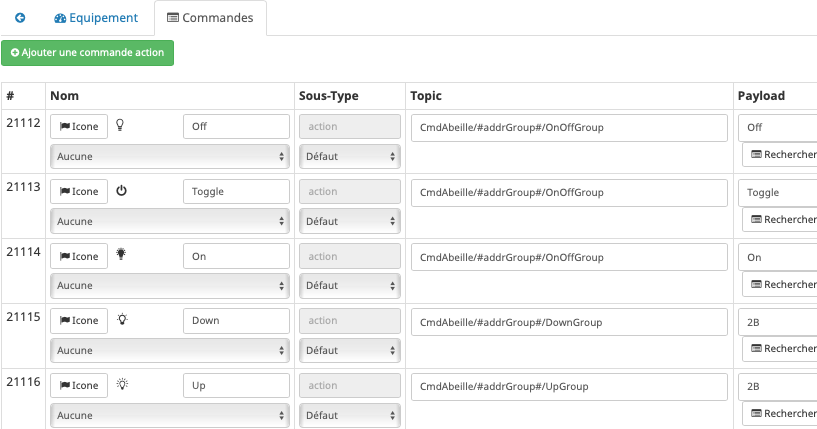
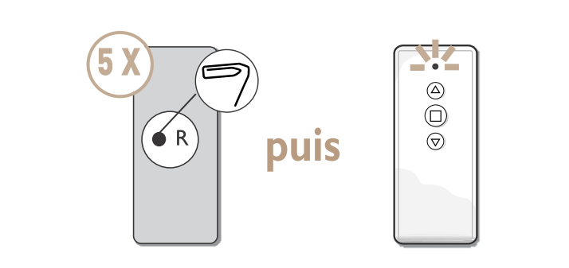
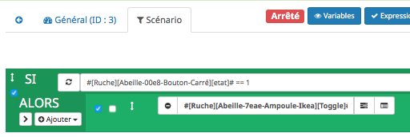

Equipements supportés¶
La liste la plus complète est la suivante Liste des équipements compatibles mais notez qu’elle peut ne pas être à jour.
Vous trouverez ci-dessous quelque informations ou procédures par marque pour certains équipements.
Eurotronics¶
Radiateur¶
Inclusion¶
Traduction de la doc
Une fois les piles insérées, PrP apparaît à l’écran et le Spirit ZigBee est prêt à être assemblé. Le Spirit ZigBee est réglé en usine en mode Add-in et affiche Jin en connexion avec une icône de radio clignotante sur l’écran LCD. Si le Spirit ZigBee a été ajouté avec succès, l’écran LCD affiche en permanence l’icône de la radio et le voyant clignote en vert. Pour continuer la mise en service, le bouton Boost doit maintenant être confirmé. Affiche l’écran LCD « InS », l’assemblage peut être effectué. Continuer avec « 4.5 Montage sur le radiateur ».
Après un reset un appuis sur e bouton central provoque l’association et la creation dans Abeille de la vanne (Zigate en mode inclusion lors de la manipulation).
Fonctionnement¶
La vanne envoie à Abeille la température de la pièce.
La vanne envoie à Abeille son taux d’ouverture en cours.
Le mode Boost permit d’ouvrir la vanne a fond (pendant 15 min (a verifier je ne suis plus sure au moment d écrire la doc.)).
La vanne peut fonctionner en deux modes. Mode automatique, la vanne régule la température toute seule. Mode manuel, Abeille pilote le taux d’ouverture de la vanne (il n’y a pas de regulation de temperature fait par la vanne).
La vanne demande au réseau toutes le 6s les commandes à executer. La vanne doit répondre dans les 6s aux demandes Abeille.
Vous pouvez faire pivoter l affichage de haut en bas en fonction de la position de votre vanne pour faciliter la lecture.
Reset¶
Traduction de la doc:
Maintenez les touches boost, moins et plus enfoncées jusqu’à ce que le compteur de l’écran LCD atteigne 10. Ne relâchez le bouton que lorsque l’écran LCD affiche « rES ». La réinitialisation est effectuée peu de temps après le relâchement du bouton. L’écran LCD affiche «PrP» et le poussoir de la vanne passe en position de montage.
Quand on fait ca, l’écran fait un countdown et le reset se produit. Puis l’écran affiche Rst.
Abeille¶
Configuration¶
Abeille configure la tête pour
remonter le niveau de batterie toutes le 43200s, soit 12h.
remonter la temperature toutes les 3500s (1h) au minimum ou pas plus souvent que toutes les 300s (5 mins).
TimeOut¶
Ne pas le mettre sous les 1h (Voir Configuration)
Homebridge¶
Voici la configuration qui fonctionne sur mon système:
Danfoss¶

Premiere mise sous tension¶
Mettre la zigate en mode inclusion
Enlever le couvercle d’Ally en tirant et en appuyant sur le clips situé en dessous
Retirer la bande papier qui protège les piles
Un appui court sur le bouton proche écran
L’inclusion doit se faire et vous devez voir Ally dans la liste des équipements
Observations¶
Test fait sur canal 15.
Répond dans les 7s à un getName ou getEP.
Affichage éteint par défaut.
inclusion¶
Fonctions¶
- Fonctionne:
Définition de la consigne de temperature de chauffage (Consigne)
Lecture de la consigne de temperature de chauffage (Consigne)
Lecture de la température ambiante
Lecture du mode en cours (D apres la norme: 00: Off, 01: Auto, 03: Cool, 04: Heat, 05: Emergency Heating, 06: Pre Cooling, 07: Fan Onl )
Lecture Batterie pourcentage
Lecture Batterie voltage
Lecture Mode Affichage (D apres norme: 00: Temperature en °C, 01: Temperature en °F)
Definition du Mode d affichage (mais la tete refuse le mode °F)
Lecture Key Lock (D apres norme: 00: No Lockout, 01: Level 1 Lockout, 02: Level 2, 03: Level 3, 04: Level 4, 05: Level 5 (le moins de fonctionalité pour l utilisateur))
Definition du niveau de Lockout (1 à 5): il n accepte que les valeurs 0 et 1. A 1 on ne peut pas modifier la temperature en tournant la molette. A 0 oui.
- Pas supporté:
En cours d investigation:
DIY¶
Ce chapitre regroupe les informations sur les équipements Do It Yourself
Heiman¶
Detecteur de fumée¶
Inclusion = = = = =
ZiGate en mode Inclusion Trombone dans petit trou sur le côté pendant 4s, le device fait un Beacon, flash en vert en face avant, s’appaire et est créé dans Abeille.
Exclusion = = = = =
Trombone dans petit trou sur le côté pendant 8s, le device fait un Leave. Bouton face avant flash plusieurs fois en vert.
Dans le réseau - - - -
Le bouton en face avant flash une fois de temps en temps en rouge environ toutes les 45 secondes.
Batterie - - - -
L’équipement remonte le niveau de sa batterie. Abeille le traite et l’affiche.
Alarme - - - -
L’information brute remonte dans Abeille. Par défaut sans alarme la valeur est à 20. Avec alarme l’information est à 21.
Un appui sur le bouton de la face avant provoque une alarme (un message remonte) et lors de la relache un autre message est envoyé pour indiquer fin d’alarme.
Vous pouvez décoder les informations remontant sur la base de :
Note
Pour tester, prendre un briquet, l’allumer et le placer sous le capteur. Le capteur active son alarme, attention aux oreilles, et le champ passe à 21 dans Abeille.
Ikea¶
Ampoule¶
Mémo
Un petit mémo avec la télécommande Hue à 20€ pour ceux qui, comme moi, vont devoir ré-inclure toutes leurs ampoules Ikea avec l’upgrade en 3.0F…
On appuie sur ON + OFF ( 1 + 0) simultanément pendant 5 secondes à 50 cm de l’ampoule (sous tension bien entendu)
On ouvre le réseau ZigBee de votre coordinateur (ZiGate par exemple)
On éteint puis on remet sous tension l’ampoule qui s’appaire au coordinateur
Pendant que le réseau est ouvert, on retourne la télécommande et à l’aide d’un trombone, on appuie sur le bouton setup pendant 5-10 secondes.
La télécommande joint à son tour le réseau ZigBee
Si on le souhaite, on peut associer la télécommande et l’ampoule en maintenant le bouton ON (1) pendant 5 secondes à 50 cm de l’ampoule (toujours sous tension).
Pour les ampoules recalcitrantes: Je viens de réussir ! J’ai réalisé un scénario qui commande une prise connectée (Ikea aussi tiens :D ). Voici ma méthode qui semble fonctionner, en tout cas chez moi 2/2 OK : Mode inclusion ON du spot Boucle qui fait 6 fois : OFF / sleep 2s / ON / sleep 0.5s .
Nouvelle inclusion
Mettre la Zigate en mode inclusion (Bouton Inclusion), la Led bleue de la Zigate doit clignoter…
Faire un reset de l’ampoule en partant de la position allumée, puis 6 fois, éteindre-allumer. Il n’est pas facile d’avoir le reset… et après maintes tentatives, vous devriez récupérer l’ampoule dans Jeedom. Autre solution bien plus simple utiliser une télécommande Philips Hue (Hue Dimmer Switch) et forcer le reset par un bouton I + bouton O appuyés suffisamment longtemps. Une fois associée, il est possible d’avoir besoin d’éteindre, attendre 10 secondes et allumer.
Déjà inclue
Zigate en fonctionnement normale
Éteindre l’ampoule 15s puis la rallumer
Identify
Ce bouton est créé au moment de la création de l’objet. Celui ci permet de demander à l’ampoule de se manifester. Elle se met à changer d’intensité ce qui nous permet de la repérer dans une groupe d’ampoules par exemple.
Bind
Identifiez l’ampoule que vous voulez paramétrer:
Récupérer son adresse IEEE, son adresse courte (ici 6766).
De même, dans l’objet Ruche récupérez l’adresse IEEE (Si l’info n’est pas dispo, un reset de la Zigate depuis l objet ruche doit faire remonter l’information).
Mettre dans le champ:
Titre, l’adresse IEEE de l’ampoule que vous voulez paramétrer
Message, le cluster qui doit être rapporté, et l adresse IEEE de la Zigate.
image:Capture_d_ecran_2018_02_21_a_23_26_49.png
Attention la capture d’écran n’est pas à jour pour le deuxième champs.
Dans message mettre::
targetExtendedAddress=XXXXXXXXXXXXXXXX&targetEndpoint=YY&ClusterId=ZZZZ&reportToAddress=AAAAAAAAAAAAAAAA
Exemple avec tous les paramètres::
targetExtendedAddress=90fd9ffffe69131d&targetEndpoint=01&ClusterId=0006&reportToAddress=00158d00019a1b22
Après clic sur Bind, vous devriez voir passer dans le log AbeilleParser (en mode debug) un message comme:
qui confirme la prise en compte par l’ampoule. Status 00 si Ok.
Rapport Manuel
Ensuite paramétrer l’envoie de rapport:
Titre, l’adresse courte de l’ampoule
Message, le cluster et le paramètre dans le cluster
Attention a capture d’écran n’est pas à jour pour le deuxième champs.:
targetEndpoint=01&ClusterId=0006&AttributeType=10&AttributeId=0000 pour retour d'état ampoule Ikea
targetEndpoint=01&ClusterId=0008&AttributeType=20&AttributeId=0000 pour retour de niveau ampoule Ikea
De même vous devriez voir passer dans le log AbeilleParse (en mode debug) un message comme:
qui confirme la prise en compte par l’ampoule. Status 00 si Ok.
Après sur un changement d’état l’ampoule doit remonter l’info vers Abeille, avec des messages comme:
pour un retour Off de l’ampoule.
HomeBridge
Télécommande Ronde 5 boutons¶
Il s’agit la de la télécommande réelle. Le chapitre suivant décrit la télécommande virtuelle equivalente proposée par Abeille.
Video
Inclusion Telecommande 5 Boutons Ronde Ikea et ampoule Ikea.
Introduction
Note
Les télécommandes envoient des commandes directement aux équipements mais pas à la zigate. De ce fait Abeille/Jeedom ne recoive pas d’info sur l’utilisation des télécommandes.
Note
C’est aux équipements qui reçoivent les demandes de la télécommande réelle de renvoyer leur état vers Jeedom.
Note
A partir du firmware 3.0f on peut récupérer des appuis sur les boutons de la télécommande avec une configuration spécifique de groupe au niveau de la ZiGate, ce qui permet de déclancher des scénarii par exemple.
Nouvelle inclusion
Mettre la Zigate en mode inclusion (Bouton Inclusion), la Led bleue de la Zigate doit clignoter…
Prendre la telecommande Ikea et faire 4 appuis sur le bouton OO au dos de la télécommande. La télécommande doit se mettre à flasher rouge en face avant. La télécommande doit apparaitre dans Jeedom.
Si cela ne fonctionne pas, il est possible d’interroger le nom pour créer l’objet (Originale solution).
Originale solution:
Note
Cette solution est la toute premiere version dans Abeille et est dans la documentation pour garder une trace mais ce n’est pas la méthode recommandée.
Il faut connaitre l’adresse de la télécommande.
Puis dans la ruche demander son nom. Par exemple pour la télécommande à l’adresse ec15
et immédiatement après appuyez sur un des boutons de la télécommande pour la réveiller (pas sur le bouton arrière).
Et après un rafraichissement de l’écran vous devez avoir un objet

Il faut ensuite éditer les commandes en remplaçant l’adresse de la télécommande par le groupe que l’on veut contrôler
Note
Il n’est plus nécessaire de faire la modification dans les commandes mais mettre l’Id du groupe dans les parametres.
La configuration
va devenir
pour le groupe 5FBD.
Leave
4x sur bouton arrière
Groupes
Récupérer le groupe utilisé par une télécommande
Avoir une télécommande et une ampoule Ikea sur le même réseau Zigbee. Attention l’ampoule va perdre sa configuration. Approcher à 2 cm la télécommande de l’ampoule et appuyez pendant 10s sur le bouton à l’arrière de la télécommande avec le symbole “OO”. L’ampoule doit clignoter, relâcher le bouton. Voilà la télécommande à affecté son groupe à l’ampoule Il suffit maintenant de faire un getGroupMemberShip depuis la ruche sur l’ampoule pour récupérer le groupe. Merci a @rkhadro pour sa trouvaille.
Il existe un bouton « link » à côté de la pile bouton de la télécommande. 4 clicks pour appairer la télécommande à la Zigate. Un appuie long près de l’ampoule pour le touchlink.
Programmer
Il est aussi possible de définir le groupe d’une télécommande depuis Abeille (Ikea Telecommande ronde 5 boutons et telecommande Ikea 2 bouton On/Off).
Pour ce faire, il faut utiliser la commande « Set Group Remote » et réveiller la télécommande. En gros la tetecommande étant sur pile, elle dort pour ne pas consommer de courant et ne peut pas entendre les demandes d’Abeille/ZiGate. Il faut donc la reveiller, pour cela un appui sur un de ses 5 boutons la reveille pendant quelques secondes. En fait, elle envoie l info d un bouton appuyé puis ecoute pendant quelques secondes et c est la qu on peut lui demander de prendre une configuration de groupe. Donc definir le group dans le champ Id, appui sur un bouton de la telecommande et « Set Group Remote ».
Attention
« Set Group Remote » ne devrait fonctionner que pour les telecommande Ikea.
Attention
Comme il faut etre synchrone, il peut etre necessaire de ci prendre à plusieurs fois pour que cela fonctionne.
Télécommande Virtuelle¶
La télécommande virtuelle est un objet Jeedom qui envoies les commandes Zigbee comme si c’était une vrai télécommande IKEA.
Vidéo: Configuration Telecommande Ikea Réelle et simulée dans Jeedom.
Pour créer un télécommande, utilisez les commandes cachées dans la ruche:
Ouvrir la page commande de la ruche et trouver la commande « TRADFRI remote control ».
Remplacez « /TRADFRI remote control/ » l’adresse du groupe que vous voulez contrôler. Par exemple AAAA.
Sauvegardez et faites « Tester ».
Vous avez maintenant une télécommande pour contrôler le groupe AAAA.
Ouvrez l’équipement « Abeille-AAAA » et ouvrez le tab « Parameter ».
et définissez le groupe à controller dans le champ Groupe.
Récupération
Récupération des appuis Télécommande Ikea dans Abeille
Après avoir récupéré le groupe utilisé par la télécommande, vous pouvez ajouter la Zigate à ce groupe ainsi Abeille recevra les demandes de la télécommande. Attention la Zigate est limitée à 5 groupes soit disons 5 télécommandes.
Pour ce faire dans Abeille, ajouter les groupes à l’objet « Ruche » qui représente la Zigate.
Vous pouvez aussi forcer le groupe utilisé par la télécommande en sélectionnant la télécommande ikea, en mettant le groupe dans le champ Id puis clic sur le bouton « Set Group Remote » et dans la seconde qui suis en appuyant sur un bouton de la télécommande pour la réveiller. Il peut être nécessaire de le faire plusieurs fois du fait du timing un peu spécifique.
C’est aussi valide pour le bouton On/Off Ikea.
https://github.com/fairecasoimeme/Zigate/issues/6
Button |
Pres-stype |
Response |
command |
attr |
|---|---|---|---|---|
down |
click |
0x8085 |
0x02 |
None |
down |
hold |
0x8085 |
0x01 |
None |
down |
release |
0x8085 |
0x03 |
None |
up |
click |
0x8085 |
0x06 |
None |
up |
hold |
0x8085 |
0x05 |
None |
up |
release |
0x8085 |
0x07 |
None |
middle |
click |
0x8095 |
0x02 |
None |
left |
click |
0x80A7 |
0x07 |
direction: 1 |
left |
hold |
0x80A7 |
0x08 |
direction: 1 => can t get that one |
right |
click |
0x80A7 |
0x07 |
direction: 0 |
right |
hold |
0x80A7 |
0x08 |
direction: 0 => can t get that one |
left/right |release |
0x80A7 |
0x09 |
None => can t get that one |
|
down = brightness down, up = brightness up,
middle = Power button,
left and right = when brightness up is up left is left and right is right.
Holding down power button for ~10 sec will result multiple commands sent, but it wont send any hold command only release.
Remote won’t tell which button was released left or right, but it will be same button that was last hold.
Remote is unable to send other button commands at least when left or right is hold down.
Reponse 0x8085 correspond à l’info Up-Down dans le widget.
Reponse 0x8095 correspond à l’info Click-Middle dans le widget.
Reponse 0x80A7 correspond à l’info Left-Right-Cmd et Left-Right-Direction dans le widget.
A partir de la vous pouvez déclencher des scénarii dans Jeedom.
Attention lors de l’utilisation de la télécommande, dans Abeille elle sera mis a jour et vos scénarii déclenchés mais si vous avez des équipements Zigbee sur ce groupe ils seront aussi activés. Par exemple vous pouvez avoir une Ampoule Ikea sur le groupe de la télécommande qui réagira aux demandes de la télécommande directement en Zigbee (même si Jeedom est HS) et avoir un scénario qui se déclenche en même temps pour ouvrir les volets en zwave ou autre.
Le capteur IR Exterieur Ikea envoie Click-Middle lors de la detection d’une présence.
Gradateur¶
Un clic sur OO
Un clic sur OO envoie un Beacon Request. Même si la zigate est en inclusion, il n’y a pas d’association (Probablement le cas si déjà associé à un autre réseau).
4 clics sur OO
Message Leave, puis Beacon Requets puis association si réseau en mode inclusion. Une fois associé, un getName avec un réveil du gradateur permet de récupérer le nom.
Voir la télécommande 5 boutons pour avoir plus de détails sur le contrôle de groupe,…
Prise¶
Nouvelle inclusion
Mettre la Zigate en mode inclusion (Bouton Inclusion), la Led bleue de la Zigate doit clignoter…
Faire un reset de la prise en insérant un petit trombone dans le trou pres de la led de la prise. Attendre 5s, la prise doit apparaitre dans Jeedom.
Télécommande¶
Simuler la télécommande
Pour créer une Telecommande simulée, clic sur l icone Télécommande:

apres rafraichissement de l’écran vous aurez une telecommande:
Il suffit maintenant de mettre l’Id du groupe dans ses parametres.
Récupérer un groupe
Cette opération est un peu délicate mais doit permettre de récupérer l’adresse de groupe utilisée par la télécommande suite aux opérations ci dessus. Dans le futur ce devrait être automatique.
Aller dans la page de configuration du plugin et clic sur « Network » pour faire apparaitre les paramètres dans l’Ampoule:
Sur l’objet Ampoule vous devez vous le champ « Groups » apparaitre sans information:
Recuperons l’adresse de l ampoule, en ouvrant la page de configuration de l ampoule:
Le champ « Topic Abeille » contient l’adresse, ici « 9252 ».
Interrogeons maintenant l’ampoule, avec un getGroupMemberShip depuis l objet Ruche:
Indiquez l’adresse de l ampoule.
Maintenant le champ « Groups » de l’ampoule doit contenir l’adresse de groupe:
ici le groupe utilisé par la télécommande est « f65d ».
Maintenant nous pouvons mettre à jour la télécommande dans Jeedom. Ouvrez les commandes de la télécommande:
Dans le champ « Topic » des commandes vous pouvez voir le texte =addrGroup= qu’il faut remplacer par la valeur du groupe, ici « f65d » et sauvegarder.
Cela donne:
Maintenant vous pouvez commander votre ampoule depuis la Télécommande physique et depuis la Télécommande Jeedom.
PS: Les scénarios ne sont pas implémentés pour l’instant (30/10/2018):
Sc1, Sc2, SC3 sur la télécommande dans Jeedom,
et les boutons « Fleche Gauche », « Fleche Droite » de la télécommande physique.
Transfo
Inclusion
appui bouton reset 3s avec zigate en mode inclusion.
Store¶
Inclusion en appuyant 8s sur les deux boutons en face avant du store et zigate en mode inclusion.
Un device doit se créer dans Abeille et vous pouvez commander le store.
Si vous voulez controler le store avec la telecommande store, lui ajouter un groupe. Par defaut la télécommande utilise le groupe 0000.
Telecommande Store¶
Inclusion en 4x fois appui sur bouton arriere avec zigate en mode inclusion.
Par defaut la telecommande adresse les messages au groupe 0000. Positionner l’adresse du groupe que vous souhaitez avec la command « Set Group Remote » afin que la telecommande physique utilise ce groupe. Et renseigner dans les parametres de la telecommande dans jeedom la valeur du groupe pour que la telecommande virtuelle utilise le meme groupe.
Attention cette telecommande n’est pas identique à la télécommande I/O, elles n’envoient pas les même commandes. Celle ci envoie des commandes pour des stores (Up/Down) alors que celle I/O envoie des commandes de type On/Off. Donc une I/O ne peut pas commander un store et une telecommande store ne peut pas commander une prise ou une ampoule.
L’objet Telecommande créé dans Abeille permet d’avoir les trois commandes Up/Stop/Down. Par défaut, la télécommande dans Abeille enverra les commandes à tous les stores en même temps. La fonction de groupe ne fonctionne pas. Renseigné tout de même le parametre Groupe dans le tab Param mettre une valeur commme 0000. Peut être qu’un jour cette valeur sera utilisable.
Bouton des store IKEA Open/close E1766 TRADFRI et son store associé
Merci a seraf pour son petit texte:
Globalement, ce que j’ai fait:
J’ai inclus le repeteur (j’en vois toujours pas l’utilité …) en restant appuyé 5 secondes sur le bouton reset J’ai inclus la télécommande en appuyant 4 fois sur le bouton d’association J’ai inclus mes stores en appuyant 5 secondes sur 2 boutons Une fois cela fait, j’ai assigné un groupe aux appareils. C’est expliqué dans la documentation, mais c’est vrai que c’est pas « user friendly ». Il faut selectionner les stores que l’on va utiliser avec la télécommande via la checkbox au dessus des équipements. Dans la section en dessous des équipements (celle ci s’appelle groupes), il faut mettre un numero de groupe à 4 chiffres. Par exemple on peut mettre 0000, mais aussi 0001 etc. Donc j’ai « ajouté » le groupe 0000 à mes 2 stores. (Add Group).
Pour la télécommande, même procédure, je lui ai mis 0000 par contre il faut cliquer sur « Set Group Remote ». Une fois cela fait, la télécommande peut controler les stores ;-)
Routeur (Repeteur)¶
Mettre la zigate en mode inclusion et un clic sur le bouton reset du routeur et il doit rejoindre le réseau.
Note: ce n’est pas un répéteur comme on peut le lire partout mais c’est un routeur.
IR - Detecteur de presence (E1525/E1575)¶
En fait le E1575 se comporte comme le E1525 (avec de subtilités).
Il faut voir qu’une fois qu’il a envoyé une demande d’allumage il ne renverra pas de nouvelle demande avant 95s. C’est important pour la suite. Par defaut il utilise le groupe 0000. Pour définir le groupe avec lequel il va discuté, il faut faire un set Group Remote avec le bon timing. Pas évident car aucune indication n’est visible (Perso je peux le voir avec le sniffer). La manip a faire est la suivante.
mettre le detecteur en mode jour et nuit Cacher le detecteur pendant au moins 95s selectionner le detecteur dans la conf abeille saisir le groupe, par exemple AAAA faire Set Group Remote et immediatement de-caché le capteur pour qu il vous detecte et se reveille pour envoyer sa commande Voila le capteur doit etre programmé, sinon refaire la manip. Ajouter le groupe a une ampoule ici AAAA attendre 95s declencher le capteur en bougeant devant lui et l ampoule doit s allumer.
Innr¶
Telecommande¶
Exclusion
Assurez vous que les zigates ne sont pas en mode inclusion.
long appui sur Gros Bouton et Program pendant disons 10s ou plus. Va générer un Leave et reset des parametres.
Inclusion
Mettre la zigate en mode Inclusion
Appui sur le - et program pendant 10s ou plus. La telecommande va rejoindre le reseau et Abeille va la configurer.
Configuration standard
Mode Scene
Bouton - Gros + pilote tous les equipments Bouton 1 à 6 envoie le niveau declarage à tous les equipements sur le reseau
Mode Light
Bouton - Gros + pilote tous les equipments Bouton 1 à 6 ne font rien
Configuration Standard Abeille
Mode Scene
Bouton - Gros + pilote tous les equipments du groupe 1001 Bouton 1 à 6 envoie le niveau declarage à tous les equipements du groupe 1001
Mode Light
Bouton - Gros + pilote tous les equipments du groupe 1001 Bouton 1 à 6 pilote les groupe 3003, 4004 à 8008
Reconfigurer les groupes
Exclure la telecommande du reseau zigbee
Surtout ne pas effacer l objet dans Abeille
Definir les groupes dans les parametres dans Abeille
Inclure la telecommande
Appliquer la configuration en activant la telecommande (en cours de dev #1794 (https://github.com/KiwiHC16/Abeille/issues/1794).
Konke¶
https://faire-ca-soi-meme.fr/domotique/2019/07/16/test-du-kit-zigbee-konke-smart-home/
Note
Les équipements ne fonctionnent que sur les canaux 15 et 20.
Temperature / Humidité¶
Inclusion
Mettre la zigate en Inclusion
Appui >8s sur le bouton lateral avec un trombone
L’equipement doit apparaitre dans Abeille/Jeedom
Exclusion
Appui >8s sur le bouton lateral avec un trombone (zigate pas en inclusion sinon il se re-appaire immédiatement).
Données
Le capteur remonte la temperature, le taux d’humidité et la tension batterie.
Door¶
Inclusion
Mettre la zigate en Inclusion
Appui >8s sur le bouton lateral avec un trombone
L’equipement doit apparaitre dans Abeille/Jeedom
Exclusion
Appui >8s sur le bouton lateral avec un trombone (zigate pas en inclusion sinon il se re-appaire immédiatement).
Données
Le capteur remonte l’etat d’ouverture de la porte et la tension batterie.
Bouton¶
Inclusion
Mettre la zigate en Inclusion
Appui >8s sur le bouton lateral avec un trombone
L’equipement doit apparaitre dans Abeille/Jeedom
Exclusion
Appui >8s sur le bouton lateral avec un trombone (zigate pas en inclusion sinon il se re-appaire immédiatement).
Données
Le bouton remonte 128 sur un clic court
Le bouton remonte 129 sur un multi clic
Le bouton remonte 130 sur un clic long
Le capteur remonte l’etat d’ouverture de la porte et la tension batterie.
Infra-Rouge¶
Inclusion
Mettre la zigate en Inclusion
Appui >8s sur le bouton lateral avec un trombone
L’equipement doit apparaitre dans Abeille/Jeedom
Exclusion
Appui >8s sur le bouton lateral avec un trombone (zigate pas en inclusion sinon il se re-appaire immédiatement).
Données
cd: si alarme
1: si pas alarme

Volt Batterie, ne semble pas remonter à vérifier.
Legrand¶
Contacteur 20AX¶
Mode: 00: Off, 02: Auto, 03: On
Prise 220V¶
Fonctions
- Fonctionne:
Inclusion automatique dans Abeille.
- Commandes:
On
Off
Toggle
Lecture etat On/Off
Retour état automatique On/Off (Bind On/Off, Report On/Off)
Groupe
Scene (Devrait être ok d apres retour utilisateur)
Puissance (Bind, Report)
Routeur (elle diffuse les Link Status)
- Pas supporté:
Level (C’est normal la prise contient un relai)
- En cours d investigation:
Peut on avoir la conso ?
Note
Dixit Akila: NB: J’ai remarqué que sur certaines prises, la mesure de la consommation d’énergie n’existe pas. En effet, il faudra la centrale (à l’aide de l’OTA) pour que la prise se mette à jour et libère la fonctionnalité. Du coup, c’est le gros inconvénient, si vous n’avez que la ZiGate. Vous risquerez en achetant les produits Legrand Celiane Netatmo de ne pas avoir toutes les fonctionnalités …
Premiere mise sous tension
(En cours d’écriture, Pas encore très clair)
Premiere mise sous tension avec la zigate en inclusion. La prise allume la Led en rouge et on entend claquer le relai mais pas de message radio zigbee. Un appui long de 8s sur le reset derriere l anneau fait flasher une fois la led puis quand je relance le reset la led cligonte 1 fois et le relai claque mais rien ni en ch11, ni en ch15.
inclusion
(En cours d’écriture, Pas encore très clair)
Le bouton « reset » se trouve en façade en enlevant tous les caches et le bouton. Ensuite, il faut mettre la ZiGate en mode inclusion puis effectuer un appuie long 5-10 sec sur le reset … attendre 10 sec … puis faire un simple clic sur le reset. Si deja associé, faire un reset bouton proche roue crantée sur le Bouton au fond du trou. Avec un trombone appuyer environ 8 secondes. Une led s’allume vert, puis flash bleu, puis flash rouge, 1s apres faire un appui rapide sur le reset (Si ce n’est pas fait le module s’appaire puis passe en Beacon request Loop, très surprenant) et la le module fait un appairage. Et doit apparaitre dans Abeille. (Tests fait sur Channel 11, je ne sais pas si il y a des limitations sur ce point.)
Aussi une bonne description ici: https://github.com/pipiche38/Domoticz-Zigate-Wiki/blob/master/en-eng/Legrand-corner.md#pairing-process
Module Encastré¶

Spécifications
Module On/Off 1.3A max 100-240V 50Hz/60Hz 0.4A max Bouton On/Off Ref: 0 648 88 300W max Interrupteur poussoir distant Controle Charge Resistive (Necessite un neutre)
Inclusion
A la sortie de la boite, sur alimentation électrique le module envoie des Beacons et la Led Rouge est allumée.
Si je mets la ZiGate en inclusion et branche le module, il s’appaire au réseau zigbee, LED rouge s’éteind.
Si deja associé, faire un reset bouton proche roue crantée sur le Bouton au fond du trou. Avec un trombone appuyer environ 8 secondes. Une led s’allume vert, puis flash bleu, puis flash rouge, 1s apres faire un appui rapide sur le reset (Si ce n’est pas fait le module s’appaire puis passe en Beacon request Loop, très surprenant) et la le module fait un appairage. Et doit apparaitre dans Abeille. (Tests fait sur Channel 11, je ne sais pas si il y a des limitations sur ce point.)
Aussi une bonne description ici: https://github.com/pipiche38/Domoticz-Zigate-Wiki/blob/master/en-eng/Legrand-corner.md#pairing-process
Fonctions
- Fonctionne:
On
Off
Toggle
Lecture etat On/Off
Retour état automatique On/Off (Bind On/Off, Report On/Off).
Sur appui bouton poussoir du boitier l’etat remonte. Le bouton provoque un toggle ( <= Bouton Poussoir).
Sur changement etat commandé depuis la ZiGate, il ne rapporte pas son état ! Heureusement Abeille demande !!!
Groupe
Scene (Devrait être ok d apres retour utilisateur)
Routeur (elle diffuse les Link Status)
- Pas supporté:
Level (C’est normal le module contient un relai et ne contient pas le cluster level).
Puissance (Pas dans le module)
Consommation (Pas dans le module)
En cours d investigation:
Bouton Pourssoir sur le boitier
Sur appui on entend le relai claquer. Rien sur la relache. Rien ne remonte sur le ZigBee suaf si Bind/Report fait sur etat.
Interrupteur Sans neutre¶
Note
Bien mettre une charge résistive.
Note
Charge entre 5W et 300W d’après la doc.
Note
Contrairement aux interrupteurs Xiaomi qui se comportent en End Device qui s’endorment qui donc ne routent pas et poll les commandes et sont donc lent à réagir aux commandes. Les interrupteurs Legrand sont des routeurs en éveille permanent, donc réagisse immédiatement et participe au mesh.
Inclusion
Zigate en mode Inclusion
Mise sous tension de l’interrupteur,
il rejoint le réseau (Dimmer switch w/o neutral),
il est créé dans Abeille.
Aussi une bonne description ici: https://github.com/pipiche38/Domoticz-Zigate-Wiki/blob/master/en-eng/Legrand-corner.md#pairing-process
Fonctions
- Fonctionne:
On
Off
Toggle
Lecture etat On/Off
Lecture Level
Routeur (elle diffuse les Link Status)
Retour état automatique On/Off (Bind On/Off, Report On/Off).
Sur appui bouton On ou Off de l interrupteur l’etat remonte.
Sur changement etat commandé depuis la ZiGate, il ne rapporte pas son état ! Heureusement Abeille demande !!!
Groupe
Scene (Devrait être ok pas testé)
- Pas supporté:
Puissance (Pas de cluster trouvé)
Consommation (Pas de cluster trouvé)
- En cours d investigation:
Cmd Zigate Move to level with On/off ne fonctionne pas
Appui prolongé haut ou bas de l interrupteur ne provoque pas de variatieon ! Ou est le dimmer ?
D’après la doc option variateur: Activable depuis l’application.
Interrupteur On/Off sur pile¶
Fonctionne: * On * Off
Fonctionne pas: * Niveau batterie
inclusion
Cet interrupteur n’est pas facile à inclure
Ce qui semble fonctionner:
Réseau zigbee sur canal 11
Activer le « Blocage traitement Annonces » dans la config du plugin
Mettre la zigate en Inclusion
Appui d environ 20s sur le bouton “reset” (bouton caché, legerement en en bas a droite sur le PCB)
L inclusion doit se produire, sinon faire un clic court quelques secondes plus tard sur ce meme bouton.
L’équipement doit être créé dans Abeille
Desactiver le mode inclusion de la Zigate
Desactiver le « Blocage traitement Annonces » dans la config du plugin
parametrer
Pour fonctionner, le bouton doit connaitre le groupe à utiliser pour envoyer les commandes On et Off aux equipements.
Renseigner le groupe dans le champ Id par exemple AAAA
Réveiller le bouton avec un appui court sur le on (Bas) ou off (Haut)
Envoyer le groupe avec la commande « Set Group Remote Legrand »
Fonctionnement
Appui court -> Cluster 0x0006 On/Off Appui Long -> Cluster 0x0008 Level Move sur appui et level stop
Ampoule Ikea attend un Move to level with OnOff (04) / level 48 / Transition Time : 1s mais l inter envoi move (01) / mode Down / rate 255
Ampoule Ikea fonctionne en On/Off. Si Elle est On elle semble accepter les level mais va du max au min (et vis versa) et je parviens pas a régler des level intermédiaires.
Si la ruche est ajoutée dans le groupe alors on récupère l appui bouton sur la commande click middle et le level sur Up-Down (1 pour depart move et 3 pour stop move), le temps entre les deux messages donne le temps d appui.
Interrupteur Entrée/Sortie sur pile¶
Pas supporté actuellement.
Livolo¶
Caracteristiques¶
Visiblement Livolo utilise uniquement le canal radio 26. Cela implique de mettre la zigate sur ce canal. Pour définir le canal allez dans la page du plugin et suivez les instructions du chapitre « Channel Mask ».
Note
quand vous faites cela, la zigate va changer de canal mais si vous avez des équipements déjà sur le réseau ils ne seront pas au courant et vous allez les perdre. Vous devrez refaire une inclusion pour les retrouver.
Interrupteur 1 btn & 2 btn¶
Inclure
Un appui long (> 6s) sur le bouton sensitif au centre de la face avant jusqu’à émission d’un bip doit provoquer l’association (Zigate en mode inclusion).
l’équipement doit se connecter et un objet doit apparaître dans Jeedom.
Retour d’état
Pour l’instant en version 3.1a de la zigate, le retour d’état envoyé par le bouton (si vous utilisez le bouton directement par exemple) n’est pas transmis par la zigate à Abeille. Sera certainement dans les versions futures.
Si vous controllez le bouton depuis Abeille, alors Abeille fait la demande d’état après envoie d’une commande.
Note
Les deux types d’interrupteurs s’annoncent sous le même nom « TI0001 ». Il n’y dans Abeille qu’un modèle car les deux types se comportent de la même facon.
Par defaut Abeille crée un modèle 2 boutons. Rendre non visible les commandes On et Off pour le second boutons si vous avez un modèle 1 bouton.
Note
Ils ne semblent pas aimer les commandes non supportées et se met en carafe et ne répond plus.
Note
Ces interrupteurs peuvent avoir un comportement ou ils ne repondent plus après quelques minutes. Il y a un trick Livolo pour qu’ils restent actifs. Si cela se produit refaite une inclusion pour qu’abeille applique le trick.
OnOffController¶
Ce chapitre regroupe les informations sur les équipements OnOff Controlleur
OSRAM¶
Prise Smart +¶
Les prises Inddor et Outdoor semble identique. Dans Abeille par defaut elle seront considérées indoor. Vous pouvez changer l icone si elle est OutDoor.
Nouvelle inclusion
Mettre la Zigate en mode inclusion (Bouton Inclusion), la Led bleue de la Zigate doit clignoter…
Appui long sur le bouton du flanc de la prise, la prise switche rapidement On/Off, lâcher le bouton, l’équipement doit se connecter et un objet doit apparaître dans Jeedom.
Inclue
Déjà inclue préalablement
un appui long (> 20s) sur le bouton latéral doit provoquer l’association (Zigate en mode inclusion) l’équipement doit se connecter et un objet doit apparaître dans Jeedom.
——————————————————- A clarifier
Retour d’état
Afin de configurer le retour d’état il faut avoir: - l’adresse IEEE sur l objet prise OSRAM - et sur l’objet ruche
Si ce n’est pas le cas vous pouvez faire un « liste Equipements » sur la ruche. Si cela ne suffit pas il faut faire « menu->Plugins->Protocol domotique->Abeille->Network List->Table de noeuds->Recalcul du cache » (Soyez patient).
Ensuite utilisez de préférence « BindShortToZigateEtat » puis « setReportEtat ». Maintenant un changement d’état doit remonter tout seul et mettre à jour l’icone.
Le retour d’état ne remonte que si l’état change. Donc si l’icone n’est pas synchro avec la prise vous pouvez avoir l’impression que cela ne fonctionne pas. Ex: la prise est Off et l’icone est on. Vous faites Off et rien ne se passe. Pour éviter cela un double Toggle doit réaligner tout le monde.
——————————————————- A clarifier
Remove
..image:: images/Capture_d_ecran_2019_07_06_a_10_43_00.png
Un remove exclue la prise OSRAM Outdoor du reseau avec un Leave (Rejoin: False, Request: False, Remove Children: False). Lors de l exclusion on entend la prise faire un aller-retour du relai. Et l’équipement dans Abeille est conservé mais désactivé. Vous pouvez garder l’équipement dans Abeille si vous le souhaitez ou le supprimer. Si vous le gardez, lors de la prochaine inclusion de cette même prise il sera ré-utilisé.
Ampoules¶
Ampoule E27 CLA 60 RGBW OSRAM (Classic E27 Multicolor)
Nouvelle inclusion*
Mettre la Zigate en mode inclusion (Bouton Inclusion), la Led bleue de la Zigate doit clignoter…
Brancher l’ampoule OSRAM. Elle devrait joindre le réseau immédiatement et un objet doit être créé dans Jeedom.
Déjà inclue
Ampoule allumée. Éteindre/Allumer 5 fois toutes les 3 s et elle doit essayer de joindre le réseau et faire un flash.
Routage¶
Le routage avec les prise OSRAM ne semble pas compatible avec les autres produits comme xiaomi, ikea,… voir plus de détail dans le chapitre route et les aspects OSRAM.
Lightify Switch¶
Retrait de la languette pile en sortie de la boite avec zigate en mode inclusion. Rien passe sur la radio. Il a fallu plein de manip dont retirer la batterie pour avoir la led du milieu qui s allume en vert de temps a autre.
Reset: Bouton en haut a gauche et en bas a droite plus de 10 secondes.
Appairage: Bouton en haut a droite et bouton en bas à gauche pendant 3 secondes avec Zigate en mode inclusion. La Led au milieu semble passer au bleu pendant cette phase.
Proprietés: Cette telecommande broadcast et n’utilise pas les groupes. Toutes les ampoules dans le réseau vont utiliser les commandes ! Elle est visiblement configuratble avec la GW Osram mais je ne l’ai pas pour tester.
Motion Sensor¶
Reset: Bouton gauche 10 secondes d’apres la documentation mais personne ne touve que cela fonctionne.
Reveil: Appui sur le bouton lateral ou mouvement devant le capteur. Utile pour configurer le capteur depuis Abeille.
Appairage: Retrait et remise de la batterie alors que la zigate en mode inclusion et l appairage se produit. Mais quitte le reseau et entre en boucle appairage / leave !!! Pour l inclure j’ai mis la zigate en inclusion, arreté Abeille, appui 10s sur bouton, attendu 20 seconde et redemarrer Abeille puis ask name. Et la il ne quitte plus le reseau !!!! Il est compliqué a appairé.
Configuration: Il est fort probable que la configuration ne se realise pas correctement lors de l inclusion. Monsieur est recalcitrant. Dans ce cas, rendre visible la commande IEEE-Addr est vérifier qu’elle est bien reseignée. Rendre visible les commandes de Bind temperature, bind occupency, set report temperature, set report occupency, et les executer plusieurs fois tout en appuyant sur le bouton lateral. Une fois fait vous pouvez rendre invisible ces commandes.
Additional info: Clignote 3 fois bleu, appairage en cours / recherche de reseau. Pile: CR2
Philips Hue¶
Ampoule 1¶
Ampoule Philips Hue White
Nouvelle inclusion
Mettre la Zigate en mode inclusion (Bouton Inclusion), la Led bleue de la Zigate doit clignoter…
- Avec une ampoule neuve Hue White
Allumer l’ampoule, elle s’associe et envoie des messages « annonce » mais pas son nom.
Si vous faites un getName avec son adresse courte dans le champ Titre et 0B (destinationEndPoint) dans le champ Message, alors elle doit répondre avec son nom, ce qui va créer l’objet dans Jeedom.
Déjà inclue
Zigate en fonctionnement normale
Éteindre l’ampoule 15s puis la rallumer
Déjà inclue 2
préalablement sur un autre réseau Zigbee
Zigate en fonctionnement normale
Avec une Télécommande Hue, Bouton « I » et « 0 », pour remettre d’usine l’ampoule.
Faire une inclusion standard.
Ampoule 2¶
Philips Hue Go
Nouvelle inclusion
Mettre la Zigate en mode inclusion (Bouton Inclusion), la Led bleue de la Zigate doit clignoter…
Appui très long sur le bouton arrière de l’ampoule plus de 40s, un objet doit apparaître dans Jeedom.
Déjà inclue
Zigate en fonctionnement normale
Appui très long sur le bouton arrière de l’ampoule plus de 40s
La lampe se met à flasher. Elle s’est déconnectée du réseau.
Dimmer¶
Philips Hue Dimmer Switch (Télécommande)
Elle permet de faire une reset touchlink d’une ampoule Ikea
elle peut fonctionner seule avec une ampoule (TouchLink): On/Off/+/-
elle peut s’inclure dans le réseau zigate
Abeille peut la configurer pour qu’elle envoie l’information du bouton appuyé. Abeille peut utiliser cette info dans un scénario par exemple.
Je ne sais pas comment faire en sorte qu’elle commande une ampoule en direct
Nouvelle inclusion
Mettre la Zigate en mode inclusion (Bouton Inclusion), la Led bleue de la Zigate doit clignoter…
Appui avec un trombone 5x sur le bouton « setup » en face arrière. Un objet télécommande doit être créé dans Abeille.
Groupe
Récupérer le groupe utilisé
Approcher la télécommande d’une ampoule de test qui est sur le réseau.
Faire un appui long >10s sur le I de la télécommande.
Attendre le clignotement de l’ampoule.
Si vous appuyez sur I ou O, elle doit s’allumer et s’éteindre.
Et les bouton lumière plus et moins doivent changer l’intensité.
Ensuite vous pouvez récupérer le groupe en interrogeant l’ampoule depuis la ruche avec un getGroupMembership.
Reset
Reset d une ampoule
Appuyer sur I et O en même temps à moins de quelques centimètres d’une ampoule
L’ampoule doit faire un reset et essayer de joindre un réseau.
Si la Zigate est en mode inclusion alors vous récupérez votre ampoule.
Informations
Informations supplémentaires
Dans l’objet Abeille vous allez trouver:
- 8 informations. 4 boutons x 2 infos (événement, durée)
Ce sont les informations qui remontent de la télécommande quand vous l’utilisez.
Cela permet à Jeedom de savoir qu’un bouton a été utilisé et vous pouvez créer les scénario que vous voulez.
4 Boutons: « I », « LumPlus », « LumMoins », « O ».
4 types events: « Appui Court = 0 », « Appui Long = 1 », « Relâche appui court = 3 », « Relâche Appui Long = 4 »
Durée, indique le temps d’appui d’un bouton (Il n’y pas de temps de nom appui).
00 appui
01 appui maintenu
02 relâche sur appui court
03 relâche sur appui long
5 icônes (On,Off,Toggle,Lumière plus, Lumière moins) pour simuler la télécommande depuis Jeedom.
C’est Jeedom qui envoie les commandes à la place de la télécommande. Pour se faire renseigner le champ « Groupe » dans la configuration.
Prise¶
Prise de contrôle d’une ampoule
- Ampoule Hue White et télécommande déjà associées au réseau :
Mettre la télécommande proche de l ampoule et appuyer sur « I » assez longtemps.
L’ampoule clignote et est configurée.
Après l’ampoule est pilotable par la télécommande. On peut récupérer le groupe utilisé sur l’ampoule dans Jeedom.
- Ampoule Ikea et télécommande déjà associées au réseau :
La configuration depuis la télécommande et le bouton “I” ne fonctionne pas comme avec l’ampoule Hue.
Mais si on récupère le groupe comme indiqué au paragraphe précédent et qu’on défini ce groupe dans l’ampoule Ikea, alors l’ampoule répond aux commandes de la télécommande.
Motion Sensor Indoor¶
Inclusion
Mettre la zigate en inclusion, puis un appui sur le bouton « setup » et l’objet doit se créer dans Abeille.
Présence
En cas de détection le capteur envoie l information à la zigate qui transmet à Abeille. A vous de faire les scénairii que vous souhaitez. Ce capteur ne permet pas de piloter en direct sans la zigate un autre équipement à ma connaisssance.
Luminosité
Le capteur remonte régulièrement la luminosité mesurée. Cela vous permet par exemple de faire de scénario en fonction du jour et de la nuit, vérifier que des lumières sont allumées dans une pièce,… Voir aussi https://en.wikipedia.org/wiki/Lux pour avoir une idée de l’intensité lumineuse, une table fournie des indications interessante.

{kind=link}
Motion Sensor Outdoor¶
voir motion sensor indoor.
Profalux¶
Volet¶
Inclusion d’un volet
Comme pour tous modules Zigbee et pour bien comprendre la procédure, il faut savoir que :
La Zigate est un coordinateur Zigbee qui permet de contrôler / créer un réseau. De la même manière que le couple télécommande / ampoule Zigbee, il est important que les deux matériels appartiennent et soient authentifiés sur le même réseau.
N’ayant pas de boutons ou d’interfaces, un volet Profalux Zigbee ne peux pas rentrer tout seul sur un réseau Zigbee. Il est indispensable d’avoir une télécommande maître qui jouera le rôle d’interface entre le volet et la Zigate.
A savoir tout au long de cette procédure : lorsque le volet fait un petit va et vient c’est le signe que la commande a bien été reçue.
Etape 1
Étape 1: Remise à zéro de la télécommande et du volet.
Retourner la télécommande.
A l’aide d’un trombone, appuyer 5 fois sur le bouton R.
La télécommande va clignoter rouge puis vert.
Le volet va faire un va et vient (attendre un petit moment).
Attendre que la télécommande ne clignote plus.
Dans la minute qui suit, appuyer sur STOP.
Le volet va faire un va et vient.
Pour tester le bon fonctionnement, vous devriez pouvoir piloter le volet avec la télécommande.
Si jamais les commandes de votre volet sont inversées, il suffit à l’aide d’un trombone d’appuyer sur fois sur F et ensuite une fois sur STOP.
Fermer le volet complètement.
Étape 2
Inclusion du volet
Mettre la ruche en mode inclusion
Pour cela appuyer sur le bouton inclusion depuis le plugin Abeille (La Zigate doit clignoter bleue)

Une fois le réseau de la Zigate ouvert, il ne vous reste plus qu’à:
Retourner votre télécommande
Appuyer 1 fois sur R
Appuyer ensuite sur la flèche du haut
Le moteur devrait faire plusieurs va et vient … Attendre que la télécommande ne clignote plus !
Pour finir, appuyer sur la touche STOP de la télécommande.
Ouvrir et fermer votre volet complètement 2 fois.
A la fin de la 2ème fermeture, le volet fera un petit va et vient.
Faites un rafraichissement de votre dashboard et votre volet devrait apparaitre !!!
Résolution
Résolution de problèmes
Le volet ne répond plus à la télécommande.
Si par une mauvaise manipulation votre volet ne répond plus à la télécommande, il est nécessaire de faire un reset de la télécommande et du volet.
Retourner l’appareil
A l’aide d’un trombone, appuyer 5 fois sur le bouton R
Attention c’est une manipulation dangereuse !
Couper l’alimentation électrique
Réunir les fils noir et marron puis les brancher sur la borne de phase

Remettre l’alimentation électrique pendant 5 secondes. Le volet devrait faire un petit mouvement.
Couper l’alimentation électrique
Séparer les fils noir et marron. Brancher le fils marron sur la phase. Si votre fils noir était brancher avec le bleu aupparavant, rebrancher le avec le bleu sinon laisser le fils noir seul en pensant à l’isoler(capuchon noir)
Remettre l’alimentation électrique et dans la minute appuyer sur le bouton STOP
Le volet devrait faire des mouvement de va-et-vient puis s’arrêter * La télécommande devrait à nouveau fonctionner * Recommencer à nouveau la procédure d’inclusion
Avancé¶
Concernant le volet
Profalux recommande de ne pas utiliser le cluster 0006 mais uniquement 0008 pour controler les volets. D’autre part il est possible de faire un « bind » puis « configure report » sur le cluster 0008 attrib 0000 pour avoir un retour de position.
Concernant la telecommande Zigbee.
R + STOP => déclenche l’ouverture du réseau.
Si la télécommande était dans le réseau Zigate alors cette derniere se met à clignoter.
R + MONTEE => déclenche un « device announce » du volet associé et de la télécommande.
modelIdentifier => pas supporté manufacturer => pas supporté location => “TS” 8043/Simple descriptor response, SQN=12, Status=00, Addr=D70A, Length=1E, EP=01, ProfId=0104/ZigBee Home Automation (ZHA), DevId=0201/Shade Controller, BitField=00 - InClusterCount=03 - InCluster=0000 - General: Basic - InCluster=0003 - General: Identify - InCluster=0015 - General: Commissioning - OutClusterCount=08 - OutCluster=0003 - General: Identify - OutCluster=0004 - General: Groups - OutCluster=0005 - General: Scenes - OutCluster=0006 - General: On/Off - OutCluster=0008 - General: Level Control - OutCluster=0100 - Closures: Shade Configuration - OutCluster=FC20 - Cluster FC20 inconnu - OutCluster=FC21 - Cluster FC21 inconnu
La télécommande s’annonce sur le réseau mais à priori on ne peut rien en faire du tout.
A laisser entrer puis ignoer/masquer.
SonOff¶
SonOff SNZB-01: Interrupteur¶
https://github.com/KiwiHC16/Abeille/issues/1322
Fonctionenment
Appui court: Toggle (Valeur 2)
Double clic: On (Valeur 1)
Clic long (4s): Off (Valeur 0)
Valeur dans la commande Click-Middle si inter bind sur la zigate.
Inclusion
mettre la zigate en Inclusion
Avec trombone, 10s sur inter au dos
Exclusion
La zigate ne doit pas être en mode Inclusion
Avec trombone, 10s sur inter au dos
Reveil
Si le module n’a jamais été configuré, il faut faire une inclusion car il reste reveillé quelques secondes après inclusion.
Si le module est déjà configuré alors un appui sur le bouton le reveille (J ai eu un cas ou il ne faisait pas de Data Request alors on ne peut pas lui parler, j ai du le re-inclure).
Configurer
Faire un bind vers l’équipement à piloter. Il fait ensuite On/Off/Toggle sur l’adresse de l’équipement.
SonOff SNZB-02: Temperature / Humidité¶
https://github.com/KiwiHC16/Abeille/issues/1323
Fonctionenment
Inclusion
Zigate en inclusion
Appui long >10s sur bouton lateral
Exclusion
Zigate pas en mode inclusion
Appui long >10s sur bouton lateral
Reveil
Je ne parviens pas à le réveiller à l’aide du bouton lateral.
Si pas configuré, l’inclure et le configurer immédiatement
Une fois configuré, faire changer la temperature ou humidité (le mettre dans ses mains, souffler dans l ouverture) et il doit se reveiller.
Recuperation
Si par erreur il a ete supprimé de jeedom, avec le plugin en mode « Blocage des annonce: non, blocage des recuperations: non », sur un changement de temperature il doit être re-créé dans Abeille.
Configurer
bind/setreport sur temperature et humidite
bind sur Power
SonOff SNZB-03: Capteur IR¶
https://github.com/KiwiHC16/Abeille/issues/1324
Fonctionenment
Inclusion
Exclusion
Reveil
Configurer
SonOff SNZB-04: Capteur de porte¶
https://github.com/KiwiHC16/Abeille/issues/1325
Fonctionenment
Inclusion
Exclusion
Reveil
Configurer
SonOff BASICZBR3: Module 10A¶
Comme je ne trouvais pas de relai piloté par zigbee j’ai fait ma propre bidouille. Comme d’habitude comme c’est sur le 220V, je ne suis pas responsable de vos actes. Vous faites ces manipulations que si vous savez ce que vous faites. Je ne pourrai être tenu responsable.
Vue d’ensemble du boitié:
Il faut ouvrir la bête, le relai est le boitier noir vers le haut de la photo:
On peut voir les pistes épaisses sous le dessous, allant sur les pattes du relai:

Le relai lui même en 10A:
Les deux grosses pistes qu’il va falloir couper:
Au cuteur, découpe des deux pistes:
Mais en faite cela ne suffit pas il faut prendre la perceuse et passer au travers completement:

Souder un bout de cuivre entre la patte du relai et la piste extérieure:
Et le tour est joué.
Note: lors du retablissement du courant, suite à une coupure de secteur par exemple, le module se souvient de son état initial et reposition le relai dans cet état.
Tuya¶
Interrupteur sur pile TS0043¶
Modeles
Necessaire
firmware 3.1d de la Zigate
Abeille stable après novembre 2020
Inclusion
Mettre la zigate en Inclusion
Touchez sur un bouton pendant 10s, l inclusion se produit et l’inter est créé dans Abeille
Exclusion
Configuration
Xiaomi¶
Tous¶
Tous les périphériques classiques
Nouvelle inclusion
Mettre la Zigate en mode inclusion (Bouton Inclusion), la Led bleue de la Zigate doit clignoter…
Appui long de 7s sur le bouton du flanc de l’équipement, l’équipement doit se connecter et un objet doit apparaître dans Jeedom.
Déjà inclue
Zigate en fonctionnement normale
Appui court sur le bouton du flanc de l’équipement et l’objet Abeille doit être créé.
Bouton Rond¶
Bouton Rond (lumi.sensor_switch)
Ce bouton envoie un message lors de l’appui mais aussi lors du relâchement. L’état dans Abeille/Jeedom reflète l’état du bouton.
Bouton Carre¶
Bouton Carre (lumi.sensor_switch.aq2)
Contrairement au bouton rond ci dessus, le bouton carré n’envoie pas d’information sur l’appui. Il envoie l’information que sur la relache.
Afin d’avoir le visuel sur le dashboard, l’état passe à 1 sur la réception du message et Jeedom attend 1 minute avant de le remettre à 0.
Informations
Informations complémentaires
Du fait de ce fonctionnement, nous ne pouvons avoir une approche changement d’état. Il faut avoir une approche événement. De ce fait la gestion des scénarii est un peu différente du bouton rond.
Par défaut le bouton est configuré pour déclencher les scénarii à chaque appui (même si l’état était déjà à 1). Mais Jeedom va aussi provoquer un événement au bout d’une minute en passant la valeur à 0.
Lors de l’exécution du scénario, si vous testé l’état du bouton est qu’il est à un vous avez reçu un événement appui bouton, si l’état est 0, vous avez reçu un événement retour à zéro après une minute.
Par exemple pour commander une ampoule Ikea:
Multi
Pour l’information multi, celle ci remonte quand on fait plus d’un appui sur le bouton. Multi prend alors la valeur remontée. Le bouton n’envoie pas d’autre information et donc la valeur reste indéfiniment. Par défaut l’objet créé demande à Jeedom de faire un retour d’état à 0 après une minute. Cela peut être enlevé dans les paramètres de la commande.
Le fonctionnement de base va provoquer 2 événements, un lors de l’appui multiple, puis un second après 1 minute (généré par Jeedom pour le retour d’état). Si vous enlevez de la commande le retour d’état alors vous n’aurez que l’événement appui multiple. Par défaut, en gros, le scénario se déclenche et si vous testez la valeur multi > 1, c’est un événement appui multiple et si valeur à 0 alors événement Jeedom de retour d’état.
Inondation¶
Capteur Inondation (lumi.sensor_wleak.aq1)
Appui court (<1s) sur le dessus
Remonte son nom et attribut ff01 (longueur 34)
Porte V1¶
Capteur de Porte Ovale (lumi.sensor_magnet)
Appui court (<1s) avec un trombone
Remonte un champ ff02 avec 6 éléments Puis son nom lumi.sensor_magnet
Porte V2¶
Capteur Porte Rectangle (lumi.sensor_magnet.aq2)
Appui court (<1s) sur bouton latéral
Remonte son nom et ff01 (len 29)
Appui Long (7s) sur bouton latéral
Inclusion Remonte son nom et Application Version Remonte ff01 (len 29)
Appui court (<1s) avec trombone
Appui long (7s) avec trombone
Inclusion Remonte son nom Remonte Appli Version Remonte ff02 avec 6 éléments
Double flash bleu sans action de notre part
Visiblement quand le capteur fait un rejoin après avoir perdu le réseau par exemple, il fait un double flash bleu.
Présence V2¶
Capteur de Présence V2
Appui court (<1s) sur bouton latéral
Remonte son nom et FF01 de temps en temps.
Appui long (7s) sur bouton latéral
Inclusion Remonte son nom et SW version Remonte FF01 (len 33)
Comportement
Il remonte une info a chaque détection de présence et remonte en même temps la luminosité. Sinon la luminosité ne remonte pas d’elle même. Ce n’est pas un capteur de luminosité qui remonte l’information périodiquement.
Température V1¶
Capteur Température Rond (lumi.sensor_ht)
Appui court (<1s) sur bouton latéral
Remonte son nom
Appui long (7s) sur bouton latéral
Exclusion Inclusion Remonte son nom et appli version Remonte ff01 (len 31)
Température V2¶
Capteur Température Carré (lumi.weather)
Appui court (<1s) sur bouton latéral
Si sur le réseau: Remonte son nom Si hors réseau et Zigate pas en Inclusion: Un flash bleu puis un flash bleu unique Si hors réseau et Zigate en Inclusion: Un flash bleu, pause 2s, 3 flash bleu
Appui long (7s) sur bouton latéral
Exclusion Inclusion Remonte son nom et appli version Remonte ff01 (len 37)
Comportement
Si détection de petite variation de température ou humidité, rapport une fois par heure
Si variation de plus de 0,5°C ou de plus de 6% d’humidité, rapport immédiat
Précision (Source Appli IOS MI FAQ Xiaomi)
Température +-0,3°C
Humidité +-3%
Cube Aqara¶

Wall Switch 1¶
Wall Switch Double Battery (lumi.sensor_86sw2)
Appui long (7s) sur bouton de gauche
Inclusion Remonte son nom et appli version Remonte ff01 (len 37)
getName
Il répond au getName sur EP 01 si on fait un appuie long sur l’interrupteur de droite (7s) et pendant cette période on fait un getName depuis la ruche.
Appui très Long (>10s) sur bouton de gauche
Exclusion
Wall Switch 2¶
Wall Switch Double 220V Sans Neutre (lumi.ctrl_neutral2)
Appui long (7s) sur bouton de gauche
Inclusion Remonte son nom et appli version Remonte d’autres informations
getName
Il répond au getName sur EP 01 s.
Appui Tres Long (>8s) sur bouton de gauche
Exclusion
« retour d’expérience » sur l’utilisation des Wall Switch Xiaomi
J’ai remplacé un double inter par un Wall Switch Double 220V Sans Neutre (lumi.ctrl_neutral2) J’ai ajouté un Wall Switch Double Battery (lumi.remote.b286acn01) pour donc simuler un double va-et-viens avec l’autre Wall switch.
Inclusion nickel pour les 2. Comme d’habitude, j’ai du attendre 1 bonne journée pour que le réseau intègre bien les 2 Device (sans cela les commandes du neutral2 ne fonctionnaient pas toutes)
1) problèmes notés sur le Wall Switch Double 220V Sans Neutre (lumi.ctrl_neutral2) : Les commandes depuis jeedom « On1 », « Off1 », « On2 », « Off2 » sont très lentes A l’inverse les commandes « Toggle1 » et « 2 » sont assez réactives évidement la commande par appui sur les poussoirs du bouton est très réactive quant à elle.
2) problèmes notés sur le Wall Switch Double sur Battery (lumi.remote.b286acn01) : lors d’un appui sur n’importe quel switch, un événement est bien déclenché par l’info « etat1 » « 2 », ou « 3 ». Donc un message très vite chopé et on peut déclencher un scénario. MAIS (car il y a un mais) si on test la valeur d’un des informations « état.. » et bien elle ne change pas
Donc conclusion, comment utiliser tout ce matos ? et bien c’est simple :
Pour le Wall Switch Double sur Battery, on déclenche les scénarios sur changement des info « état.. ». mais on se fout des valeurs de ces info, on ne les teste pas, c’est du temps perdu. au lieu de cela faire directement l’action « Toggle » sur le Wall Switch Double 220V.
Ca marche, et c’est assez réactif (la pire latence notée était juste au dessus de la seconde)
Note
Si je me souviens bien ces switch se comportent comme des équipements terminaux sur pile (ils s’endorment), pas comme des routeurs (ampoules). La difference est que les ampoules sont en ecoute tout le temps et peuvent reagir immédiatement sur reception d’un message. Mais pour les interrupteurs le processus est different. La zigate envoie la demande qui est recue par les routeurs, ceux ci conserve la demande pendant 7s, l’interrupteur se reveille toutes les 5s (je crois me souvenir) et demande les commandes en attente pour lui. Le routeur qui sert l’interruptuer lui envoie la commande. Ceci explique ton delai observé. Le delai sera entre 0s et 5s en fonction du moment de reveil par rapport a l envoie de la demande. C est la meme chose pour On,Off et Toggle. On ne peut rien y faire c’est lié au firmware de l inter. Si tu veux cette meme fonction en instantané il faut que tu passes par un module relai xiaomi par exemple.
Note
Voir le chapitre information du bouton carré ci dessus.
Vibration¶
Capteur Vibration
Appui long (7s) sur bouton de gauche
Inclusion Remonte son nom et appli version Remonte d’autres informations
Attribute 0055
Il semblerai qu’une valeur:
1 indique une détection de vibration
2 indique un rotation
3 indique une chute
Attribute 0503
Pourrait être la rotation après l’envoi de l’attribut 0055 à la valeur 2
Attribute 0508
Inconnu, est envoyé après attribut 0055.
» Si ça peut servir a quelqu’un J’ai “presque” compris le fonctionnement de l’angle du capteur de vibration Xiaomi.
Donc, sensibilité réglée en “High”, on récupère :
Une Info “Evenement” qui va de 1 à 3 3 = choc violent 2 = je touche / bouge le capteur / fait tourner le capteur 1 = … ? retour a 1 après un 3 mais pas toujours, en résumé je n’ai pas trouvé de comportement répétitif et clair qui explique comment j’ai eu 1
Une info “Angle” Je ne comprenais rien au valeur remontées mais j’ai enfin compris. Il ne s’agit PAS d’une mesure d’angle absolue. C’est en fait la variation d’angle effectuée depuis la dernière remontée de valeur. Mais attention, c’est un valeur non signée, donc impossible de déterminer si il a continué de tourner ou bien si il est revenu en arrière. Autre chose importante, le capteur n’envoi une nouvelle info d’angle QUE lorsqu’il s’est arrêté de tourner. Il n’envoi rien durant le mouvement. Donc en résumé, si vous lui faites faire doucement 3 tours sur lui-même et revenez à une position proche de quelques degrés … impossible de le savoir et vous ne recevrez dans l’info que ces quelques degrés de delta. Dernière chose, la mesure se fait en rotation autour de 2 axes seulement. La rotation autour de l’axe vertical ne renvoi rien quel que soit la position du capteur.
Donc impossible avoir un angle d’ouverture de porte par exemple (rotation autour de la verticale).
Utilisation typique : un truc qui bascule puis s’arrête se stabilise… et qui revient a sa position ensuite. Il y a alors un envoi d’info a chaque position stable. ex : porte de garage, lucarne basculante, lames de pergola bioclimatique, etc..
Petit complément sur l’utilisation du capteur de vibration Xiaomi avec Abeille.
J’ai réussi sa mise en oeuvre comme détecteur de vent sur un store banne : Installé en bout de bras, juste protégé de la pluie au cas ou.. réglé en sensibilité « high »
Ca marche !! :D
Vent fort ou rafale, le capteur envoi Evenement « 1 » ou « 3 » ou bien « 1 puis 3 ».. peu importe donc je commande le « Repli » du store si « 1 » ou « 3 » (j’ai simulé le vent en secouant ou en tapant sur l’extrémité du store)
Et puis un erratum. J’avais écrit « Il n’envoi rien durant le mouvement. ».. c’est FAUX. Sur un mouvement lent et constant, il envoi régulièrement un Evenement « 2 » Vu la position en bout de bras que je lui ai donné, le capteur détecte un changement d’angle et envoi trois message « 2 » avec un delta d’angle de 5 ou 6° durant le mouvement.
Le risque aurait été qu’il envoi « 1 » ou « 3 » durant l’extension du store, entraînant un repli immédiat mais non, tout se passe bien, il envoi seulement des « 2 ».
«
Fumée¶
Capteur de fumée
3 appuis sur le bouton de façade
Inclusion ou Exclusion si la Zigate n’est pas en mode inclusion
Sensibilité du capteur
Il est possible de définir le seuil de détection du capteur: 3 niveaux (En développement).
Test du capteur
Avec le bouton tester, vous envoyez un message au capteur qui doit réagir avec un bip sonore (3 messages envoyés par Abeille, il doit y avoir entre 1 et 3 bips).
Réveil
Le capteur se réveille toutes les 15s pour savoir si la Zigate à des infos pour lui.
Gaz¶
Capteur Gaz
Ce capteur est un router.
Paramètres
Vous pouvez choisir le niveau de sensibilité: Low - Moyen - High
Tester la bonne connexion au réseau
Avec le bouton tester, vous envoyez un message au capteur qui doit réagir avec un bip sonore (3 messages envoyés par Abeille, il doit y avoir 3 bips à 5s d’intervalles).
Prise¶
On/Off retour etat en temps réel. Que ce soit sur commande depuis Jeedom ou sur utilisateur inter sur la prise.
Puissance: remonté toutes les secondes et demi si charge allumée. Sinon pas de remonté après la derniere remonté à 0.
Temperature, Conso, Current et Voltage: remonte de temps en temps toutes les 450s / 7.5min ou moins.